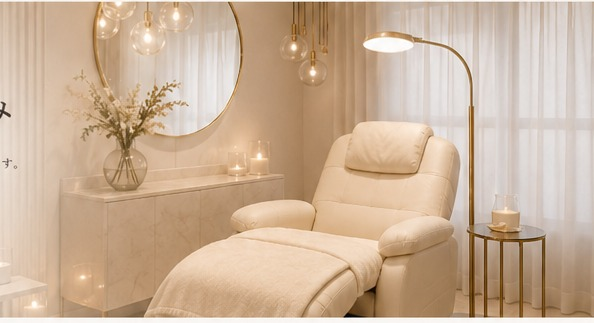

サロン運営の仕組み
出会いからアフターケア、次回予約・リピートまでを一貫して支え、スタッフもお客様も心地よくいられるサロン運営を実現します。
Lucia の運営フロー
01
集客
Web・SNS・紹介・広告・SEO
02
予約
LINEで24時間受付
03
カウンセリング
丁寧なヒアリングとデザイン提案
04
施術
高い技術と衛生管理で満足度の高い仕上がり
05
アフター
アフターケアと次回提案のご案内
06
リピート
次回予約・継続来店で安定した経営を構築
仕組みで生まれる成果
集客力の向上
Web・SNS・紹介の導線設計で、安定した新規集客を実現します。
業務効率の最適化
予約・顧客・施術の一元化で、スタッフの負担を軽減します。
顧客満足度の向上
丁寧なカウンセリングとアフターで、信頼を獲得します。
リピート率の向上
次回提案と仕組み化で、安定したリピートを実現します。
Lucia の実績に基づく運営設計
これまでのサロン運営で培ったノウハウを、仕組みとして体系化しています。
92%
リピート率
2024年実績
86%
次回予約率
2024年実績
6.2週
継続来店サイクル
2024年実績
サロン運営や導入についてのご相談はお気軽に。
同業者向けの相談も承っております。お気軽にお問い合わせください。